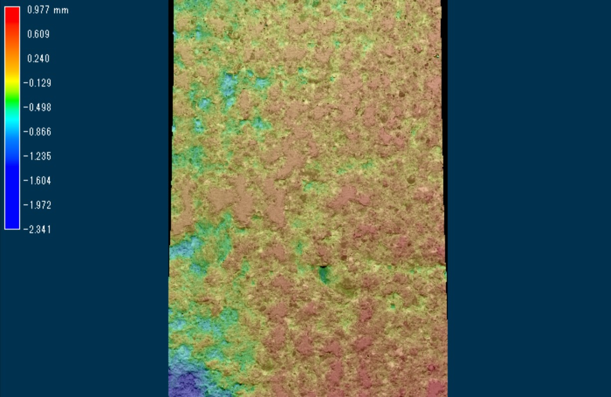

床のすべりやすさと人々の快適性・安全性との関係
人々が生活する中で最も接する頻度が高い部位である床は、様々な性能が要求されます。その中でも、安全性や快適性に大きくかかわるすべり性能は肝要といえます。小野先生や横山先生によって開発されたすべり試験機(O・Y-PSM)を端緒とし、床のすべりやすさを多角的に評価します。

人々が生活する中で最も接する頻度が高い部位である床は、様々な性能が要求されます。その中でも、安全性や快適性に大きくかかわるすべり性能は肝要といえます。小野先生や横山先生によって開発されたすべり試験機(O・Y-PSM)を端緒とし、床のすべりやすさを多角的に評価します。

詳しく見る

建築物を利用する人間はその多くの時間床に接触しており、そのかたさは快適性や安全性と強く結びついています。長時間の立ち仕事や転倒した時といった状況に応じて適切な床のかたさの評価方法を確立することを目指します。
詳しく見る

地震や風による振動は建築物を建てるうえで耐久性の観点から非常に重要ですが、一方で交通振動や歩行振動などの環境振動もまた居住性の観点から配慮が必要です。そうした振動に関して、人間の振動感覚，評価に対応する性能値を探ります。
詳しく見る

公共施設等の床材では、施工直後には防滑性能を有していても、施設利用者が長期間の供用により進行し、防滑性能が低下することで事故の危険性が高まります。性能が低下する要因とその影響度合いを定量的に把握し、事前に劣化を予測する手法の構築を目指します。
詳しく見る

床材の表面に存在する微細な表面凹凸は、安全性や快適性にかかわる諸性能に影響を及ぼします。それらを体系的に整理し、各性能に対応する波長範囲の表面凹凸を把握することで、複数の要求性能を満たす、用途に適した床材の開発に寄与します。
詳しく見る